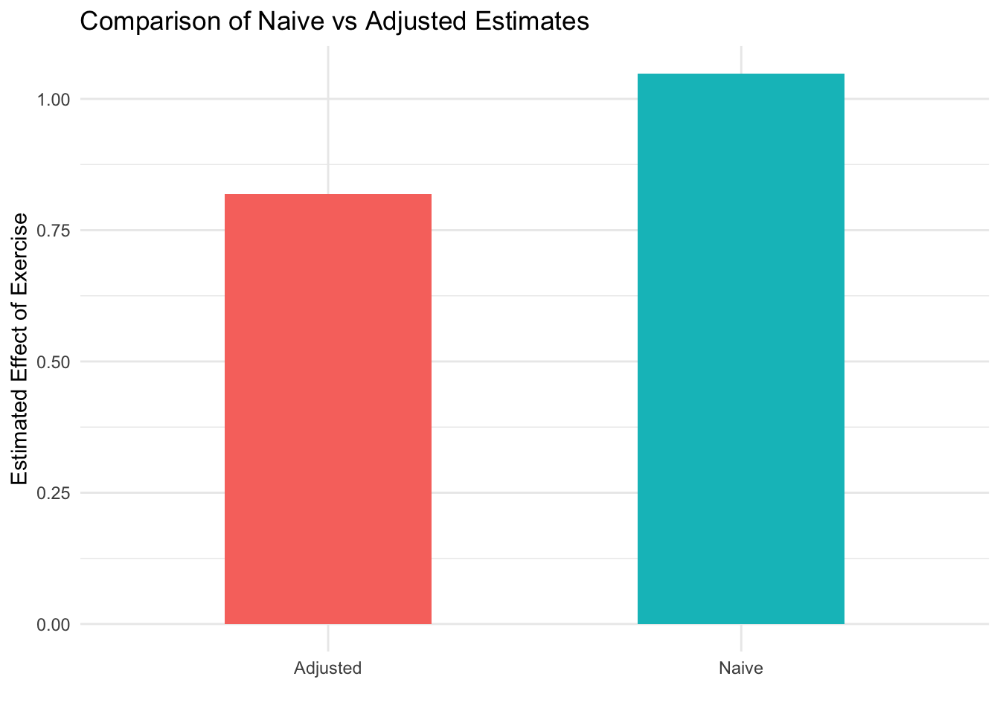

9 Applications of Causal Inference in Public Health and Medical Research
Class materials
Slides: Module 9
Recording: Module 9, Part 1
Recording: Module 9, Part 2
Textbook reading
Supplementary reading
Sterman, J. D. (2006). Learning from evidence in a complex world. American Journal of Public Health, 96(3), 505–514.
Examples of systems-level interventions in public health and policy
Topics covered
- Public health policy evaluation
- Environmental exposure studies
- Health disparities research
- Prevention program evaluation
9.1 Public health policy evaluation
n <- 2000
baseline_health <- rnorm(n, mean = 50, sd = 10)
policy <- ifelse(baseline_health + rnorm(n, 0, 5) < 52, 1, 0)
health_outcome <- 5 * policy + 0.6 * baseline_health + rnorm(n, 0, 5)
df <- data.frame(
Policy = factor(policy, labels = c("No Policy", "Policy")),
Baseline_Health = baseline_health,
Health_Outcome = health_outcome
)
model_naive <- lm(Health_Outcome ~ Policy, data = df)
model_adjusted <- lm(Health_Outcome ~ Policy + Baseline_Health, data = df)
summary(model_naive)$coefficients["PolicyPolicy", ]## Estimate Std. Error t value Pr(>|t|)
## -3.754337e+00 2.907129e-01 -1.291424e+01 1.053569e-36## Estimate Std. Error t value Pr(>|t|)
## 4.702139e+00 3.249861e-01 1.446874e+01 3.394324e-45library(ggplot2)
ggplot(df, aes(x = Policy, y = Health_Outcome, fill = Policy)) +
geom_boxplot(alpha = 0.6) +
labs(title = "Simulated Impact of Public Health Policy",
x = "Policy Implemented",
y = "Health Outcome After 1 Year") +
theme_minimal()
9.2 Environmental exposure studies
Environmental exposure studies investigate how exposure to environmental factors—such as air pollution, contaminated water, radiation, or hazardous chemicals—affects human health. These studies aim to establish causal links between environmental conditions and outcomes like respiratory illness, cancer, or developmental disorders. Because randomizing exposure is often unethical or impractical, these studies typically rely on observational data, making careful adjustment for confounders and sources of bias essential. Tools like causal diagrams, regression models, and sensitivity analyses are often employed to assess whether the observed health effects are truly caused by the environmental exposure.
In the policy simulation, the setup closely resembles an environmental exposure study where “policy” could be interpreted as an intervention to reduce environmental harm (e.g., enforcing clean air regulations). The simulation demonstrated how individuals exposed to the policy had lower average health outcomes, not because the policy failed, but because those individuals started with worse baseline health. This reflects a common challenge in environmental health research: exposure is often non-random and associated with other risk factors. Just like in environmental exposure studies, it is crucial to adjust for baseline differences—such as pre-existing health or socioeconomic status—to avoid incorrectly concluding that the exposure (or policy) caused harm.
9.3 Health disparities research
Health disparities research focuses on understanding and addressing differences in health outcomes across population groups defined by factors such as race, ethnicity, socioeconomic status, geography, gender, or disability. These disparities often stem from unequal access to care, systemic discrimination, environmental exposures, and social determinants of health. The goal is not only to document these differences but also to identify causal pathways and implement interventions that promote health equity. Causal inference tools are especially valuable in this field because they help distinguish between mere correlations and actual structural inequalities that can be targeted through policy and intervention.
The simulation of public health policy can be directly applied to health disparities research by modeling how an intervention affects different subgroups. For instance, if a health policy is implemented in lower-income neighborhoods, those individuals might begin with worse baseline health, as shown by lower health outcomes in the policy group. Without adjusting for these baseline differences, the simulation might misleadingly suggest that the policy worsens outcomes. In reality, this reflects the importance of stratifying or adjusting for social determinants when evaluating interventions aimed at reducing disparities. The simulation thus highlights how easily misleading conclusions can arise if disparities are not properly accounted for in causal analysis.
9.4 Prevention program evaluation
Prevention program evaluation involves assessing the effectiveness of initiatives designed to reduce the risk of adverse health outcomes before they occur. These programs might target behaviors (e.g., smoking cessation), environmental risks (e.g., air quality improvement), or access to services (e.g., vaccination campaigns). Evaluators aim to determine whether the program caused measurable changes in outcomes such as disease incidence, risk factor reduction, or health equity. This requires careful consideration of confounding factors, selection bias, and whether the observed differences can be attributed to the intervention itself — making causal inference tools central to prevention research.
In our simulation, the public health policy acts like a prevention program aimed at improving long-term health outcomes. By comparing the health trajectories of individuals in the policy versus no-policy groups, we can estimate the effect of the intervention. However, the simulation also reveals a key challenge: even if a program targets at-risk populations, initial disparities (like poorer baseline health) may mask its true benefits unless we adjust for those differences. This mirrors real-world prevention evaluations, where randomized trials or proper covariate adjustment are essential to distinguish actual program impact from background variability.